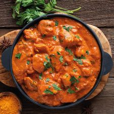

Butter Chicken(spicy)

Description
This is a Indian dish that goes quite well with rice or na'an. Even a tortilla if you're feeling lazy! It is a perfect blend of spice and seasoning to give you that little kick of heat and an explosion of flavor that will leave you wanting more.
Ingredients
- 1-1.5lb chicken breast or thigh
- 2 yellow onions
- 3-6 serrano peppers(your choice of heat)
- 1 bell pepper
- bushel of cilantro
- 1/3-1/2 size of your palm of ginger root
- 1 garlic(full clove)
- 1 can of Tomatos
- 1 small can of tomato paste
- heavy cream
- sour cream
- turmeric
- paprika
- salt
- black pepper
- garam masala
- curry powder
- chili powder(optional)
- olive oil
Steps
- Then dice your onion and throw it in a pot and drizzle in olive oil, cook for a few minutes
- You cut up your ginger, garlic, and serrano peppers to fine pieces, throw in all these veggies into the onion pot
- Cut up the bell pepper into strips then halfs, save for later
- Get as much cilantro as you want ready, save for later
- Cut the chicken into bite size pieces, then thow into the onions once onions are nearing brown
- Mix up all the spices and throw onto chicken and stir nicely
- Pour in as many tomatos as you want(little over half usually)
- Pour in a little over half of tomato paste and stir
- Pour in heavy cream until just barely covering everything but everything is still visible at the top
- Pour in 2 spoon fulls of sour cream
- Cook 20 min on 4 heat (low simmer)
- Throw in bell pepper and cook for another 10-15 minutes
- Turn off heat and throw in cilantro and let stand for 5 minutes
- Serve with Rice, Na'an, or tortillas
- Dig in!